Grade 1 — Foundations
Counting, place value, and operations. This guide contains 49 chapter-level worked lessons, review questions, answers, and linked illustrations.
Contents — select a chapter
Counting to 120
Count forward or backward and recognize a numeral as a quantity.
Count from 17 to 21.
- Start at 17
- Add one each step: 18, 19, 20, 21
- Every next number is one greater.
What number comes just after 69?
Hint: Count one forward.
Show answer and verify
70
Check the units, inputs and intermediate steps. Different solution methods may be valid.
Compare numbers
Use place value and number lines to decide which number is larger.
Compare 42 and 47.
- Both have four tens
- Compare ones: 2 is less than 7
- So 47 is larger.
Which is greater: 56 or 65? Enter the larger number.
Hint: Compare the tens first.
Show answer and verify
65
Check the units, inputs and intermediate steps. Different solution methods may be valid.
Addition within 20
Combine parts to find a total; make a ten to calculate mentally.
8 + 7 = ?
- Split 7 into 2 + 5
- 8 + 2 = 10
- 10 + 5 = 15.
9 + 6
Hint: Make ten first: 9 + 1.
Show answer and verify
15
Check the units, inputs and intermediate steps. Different solution methods may be valid.
Subtraction within 20
Subtract means remove or find the difference between quantities.
14 − 6 = ?
- Remove 4 to reach 10
- Remove 2 more
- 8 remain.
17 - 9
Hint: Subtract 7, then 2.
Show answer and verify
8
Check the units, inputs and intermediate steps. Different solution methods may be valid.
Tens and ones
A two-digit number has tens and ones; 34 = 3 tens plus 4 ones.
Write 62 as 60 + 2.
- The 6 is worth 60
- The 2 is worth 2
- So 62 = 60 + 2.
What is 4 tens + 7 ones?
Hint: Four tens is forty.
Show answer and verify
47
Check the units, inputs and intermediate steps. Different solution methods may be valid.
Skip counting
Skip counting is repeated addition by an equal amount.
Count by fives: 5, 10, 15, 20.
- Add five each time
- The next after 20 is 25.
What comes after 30 when counting by 5s?
Hint: Add five.
Show answer and verify
35
Check the units, inputs and intermediate steps. Different solution methods may be valid.
Equal groups
Represent equal-size groups by repeated addition, preparing for multiplication.
3 groups of 2 dots.
- 2 + 2 + 2 = 6
- There are 6 dots in total.
How many dots in 4 groups of 2?
Hint: Add two four times.
Show answer and verify
8
Check the units, inputs and intermediate steps. Different solution methods may be valid.
Shapes and attributes
Count sides and corners to classify plane figures.
A triangle has 3 sides and 3 vertices.
- Trace each edge
- Count three edges
- Count three corners.
How many sides does a rectangle have?
Hint: Count around the outline.
Show answer and verify
4
Check the units, inputs and intermediate steps. Different solution methods may be valid.
Time and money
Read clocks to the hour/half hour and count basic coin values.
Two dimes are 10 + 10 cents.
- A dime is ten cents
- Two dimes are twenty cents.
How many cents are 3 dimes?
Hint: A dime is 10 cents.
Show answer and verify
30
Check the units, inputs and intermediate steps. Different solution methods may be valid.
Word problems
Convert a short story into addition or subtraction.
You have 8 apples and receive 5 more.
- More means add
- 8 + 5 = 13.
You have 9 pencils and give away 4. How many remain?
Hint: Giving away reduces the total.
Show answer and verify
5
Check the units, inputs and intermediate steps. Different solution methods may be valid.
One-to-one correspondence
One-to-one correspondence: Use a number line or a grouped collection to associate quantities with numerals. Check successive changes carefully. Counting helps establish order, magnitude, and stable numerical representation.
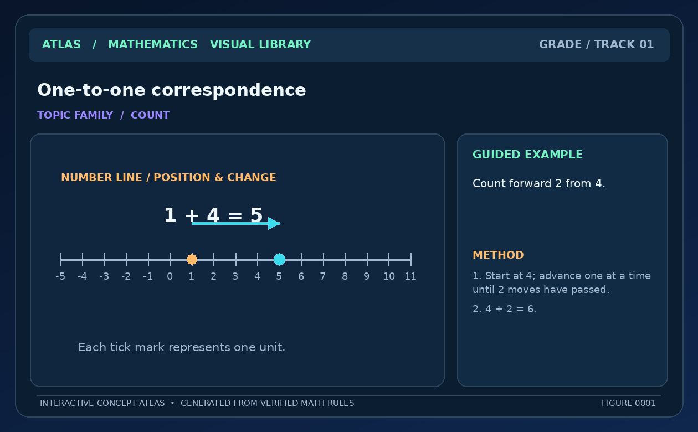
Count forward 2 from 4.
- Start at 4; advance one at a time until 2 moves have passed.
- 4 + 2 = 6.
What number is 5 after 6?
Hint: Count forward the requested number of steps.
Show answer and verify
11
Check the units, inputs and intermediate steps. Different solution methods may be valid.
Counting on from any number
Counting on from any number: Use a number line or a grouped collection to associate quantities with numerals. Check successive changes carefully. Counting helps establish order, magnitude, and stable numerical representation.
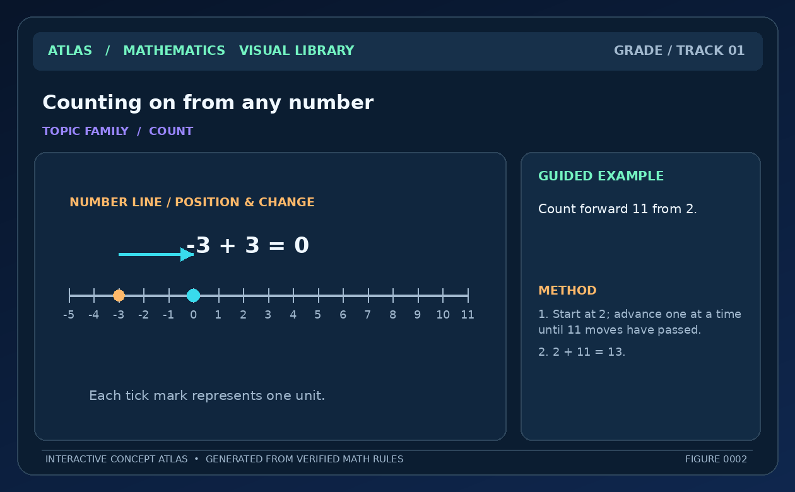
Count forward 11 from 2.
- Start at 2; advance one at a time until 11 moves have passed.
- 2 + 11 = 13.
What number is 1 after 13?
Hint: Count forward the requested number of steps.
Show answer and verify
14
Check the units, inputs and intermediate steps. Different solution methods may be valid.
Counting backwards from 100
Counting backwards from 100: Use a number line or a grouped collection to associate quantities with numerals. Check successive changes carefully. Counting helps establish order, magnitude, and stable numerical representation.
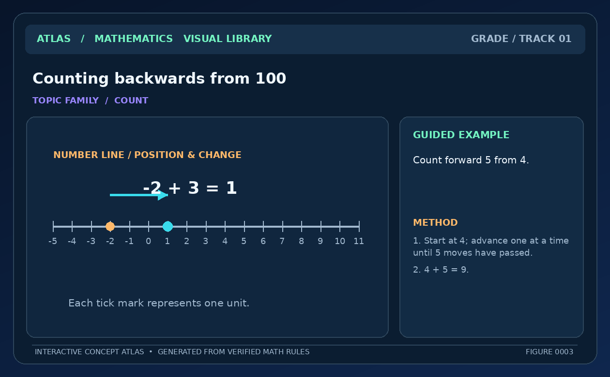
Count forward 5 from 4.
- Start at 4; advance one at a time until 5 moves have passed.
- 4 + 5 = 9.
What number is 1 after 9?
Hint: Count forward the requested number of steps.
Show answer and verify
10
Check the units, inputs and intermediate steps. Different solution methods may be valid.
Skip counting by twos
Skip counting by twos: Use a number line or a grouped collection to associate quantities with numerals. Check successive changes carefully. Counting helps establish order, magnitude, and stable numerical representation.
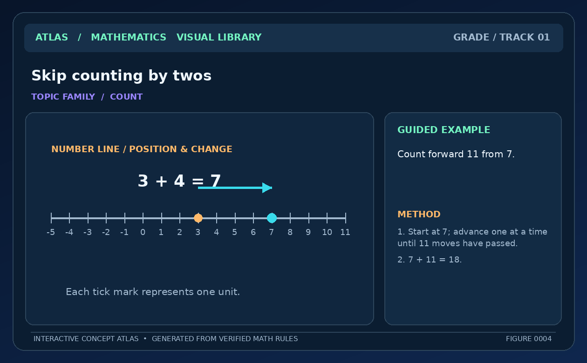
Count forward 11 from 7.
- Start at 7; advance one at a time until 11 moves have passed.
- 7 + 11 = 18.
What number is 1 after 18?
Hint: Count forward the requested number of steps.
Show answer and verify
19
Check the units, inputs and intermediate steps. Different solution methods may be valid.
Skip counting by fives
Skip counting by fives: Use a number line or a grouped collection to associate quantities with numerals. Check successive changes carefully. Counting helps establish order, magnitude, and stable numerical representation.
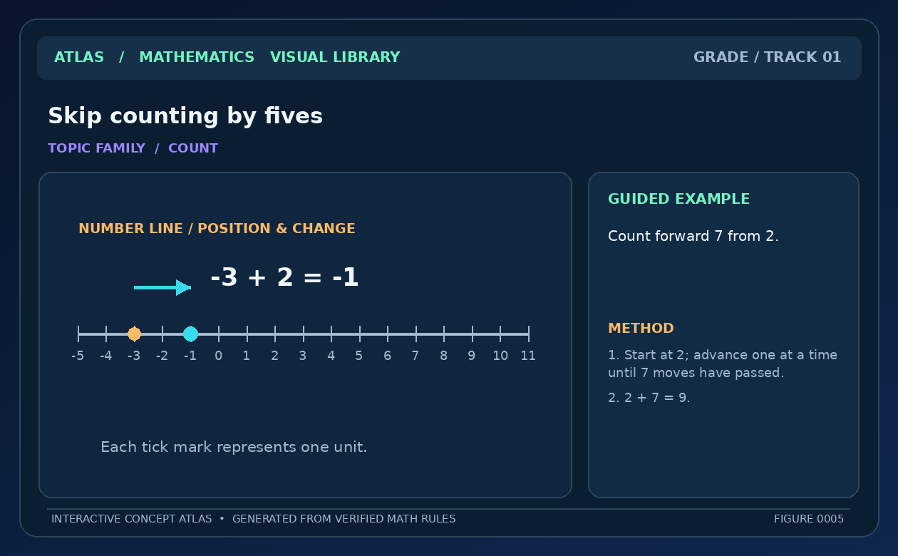
Count forward 7 from 2.
- Start at 2; advance one at a time until 7 moves have passed.
- 2 + 7 = 9.
What number is 1 after 9?
Hint: Count forward the requested number of steps.
Show answer and verify
10
Check the units, inputs and intermediate steps. Different solution methods may be valid.
Skip counting by tens
Skip counting by tens: Use a number line or a grouped collection to associate quantities with numerals. Check successive changes carefully. Counting helps establish order, magnitude, and stable numerical representation.
Count forward 11 from 5.
- Start at 5; advance one at a time until 11 moves have passed.
- 5 + 11 = 16.
What number is 1 after 16?
Hint: Count forward the requested number of steps.
Show answer and verify
17
Check the units, inputs and intermediate steps. Different solution methods may be valid.
Number patterns to 1000
Number patterns to 1000: Use a number line or a grouped collection to associate quantities with numerals. Check successive changes carefully. Counting helps establish order, magnitude, and stable numerical representation.
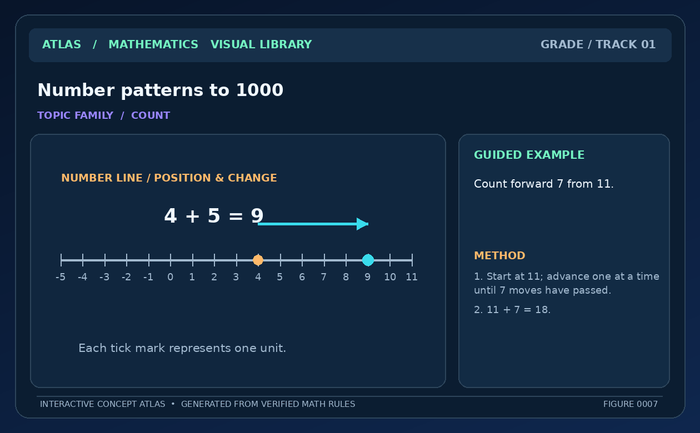
Count forward 7 from 11.
- Start at 11; advance one at a time until 7 moves have passed.
- 11 + 7 = 18.
What number is 4 after 18?
Hint: Count forward the requested number of steps.
Show answer and verify
22
Check the units, inputs and intermediate steps. Different solution methods may be valid.
Ordinal numbers
Ordinal numbers: Use a number line or a grouped collection to associate quantities with numerals. Check successive changes carefully. Counting helps establish order, magnitude, and stable numerical representation.
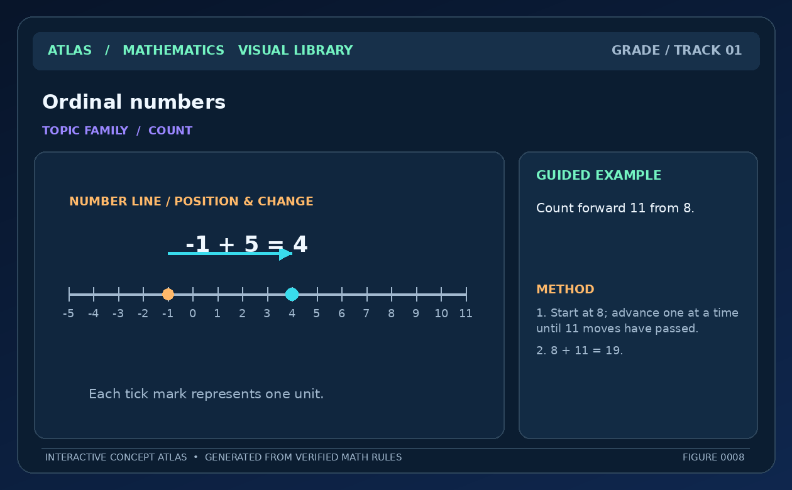
Count forward 11 from 8.
- Start at 8; advance one at a time until 11 moves have passed.
- 8 + 11 = 19.
What number is 4 after 19?
Hint: Count forward the requested number of steps.
Show answer and verify
23
Check the units, inputs and intermediate steps. Different solution methods may be valid.
Writing numbers in expanded form
Writing numbers in expanded form: Use a number line or a grouped collection to associate quantities with numerals. Check successive changes carefully. Counting helps establish order, magnitude, and stable numerical representation.
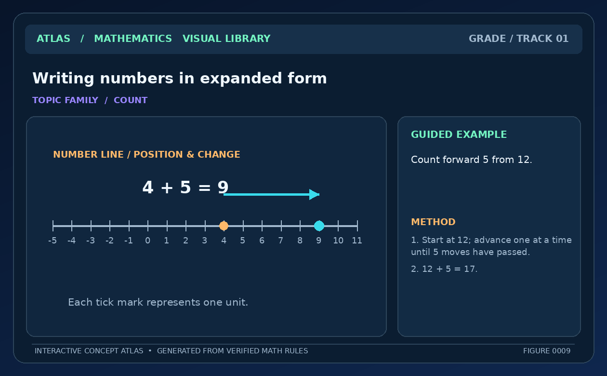
Count forward 5 from 12.
- Start at 12; advance one at a time until 5 moves have passed.
- 12 + 5 = 17.
What number is 5 after 17?
Hint: Count forward the requested number of steps.
Show answer and verify
22
Check the units, inputs and intermediate steps. Different solution methods may be valid.
Ordering numbers on a number line
Ordering numbers on a number line: Use a number line or a grouped collection to associate quantities with numerals. Check successive changes carefully. Counting helps establish order, magnitude, and stable numerical representation.
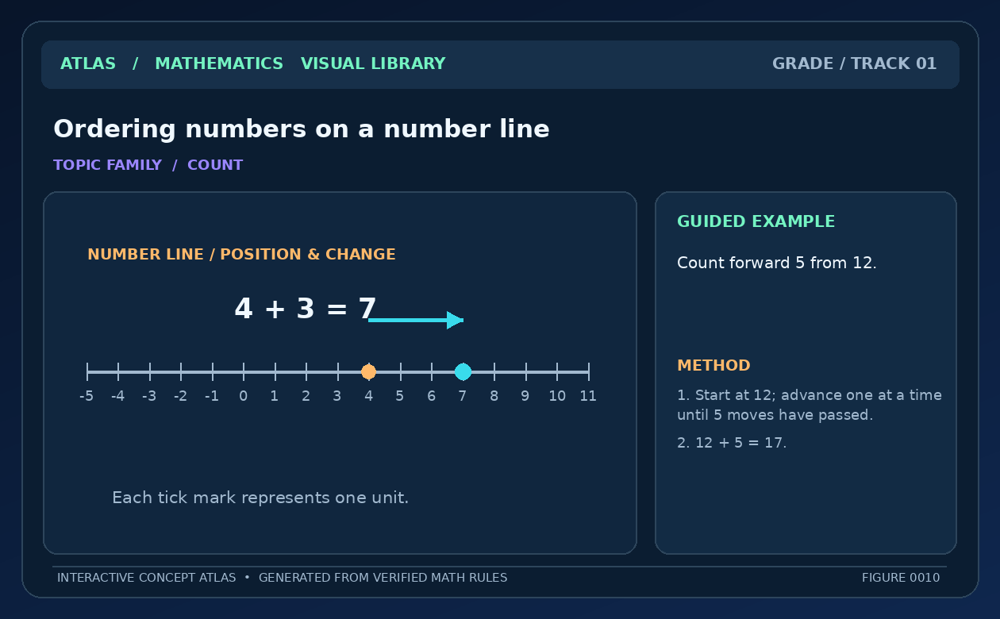
Count forward 5 from 12.
- Start at 12; advance one at a time until 5 moves have passed.
- 12 + 5 = 17.
What number is 1 after 17?
Hint: Count forward the requested number of steps.
Show answer and verify
18
Check the units, inputs and intermediate steps. Different solution methods may be valid.
Even and odd numbers
Even and odd numbers: Use a number line or a grouped collection to associate quantities with numerals. Check successive changes carefully. Counting helps establish order, magnitude, and stable numerical representation.
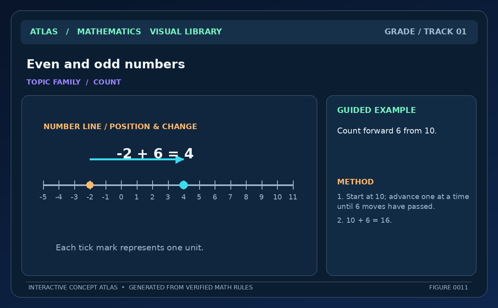
Count forward 6 from 10.
- Start at 10; advance one at a time until 6 moves have passed.
- 10 + 6 = 16.
What number is 5 after 16?
Hint: Count forward the requested number of steps.
Show answer and verify
21
Check the units, inputs and intermediate steps. Different solution methods may be valid.
Estimating quantities
Estimating quantities: Use a number line or a grouped collection to associate quantities with numerals. Check successive changes carefully. Counting helps establish order, magnitude, and stable numerical representation.
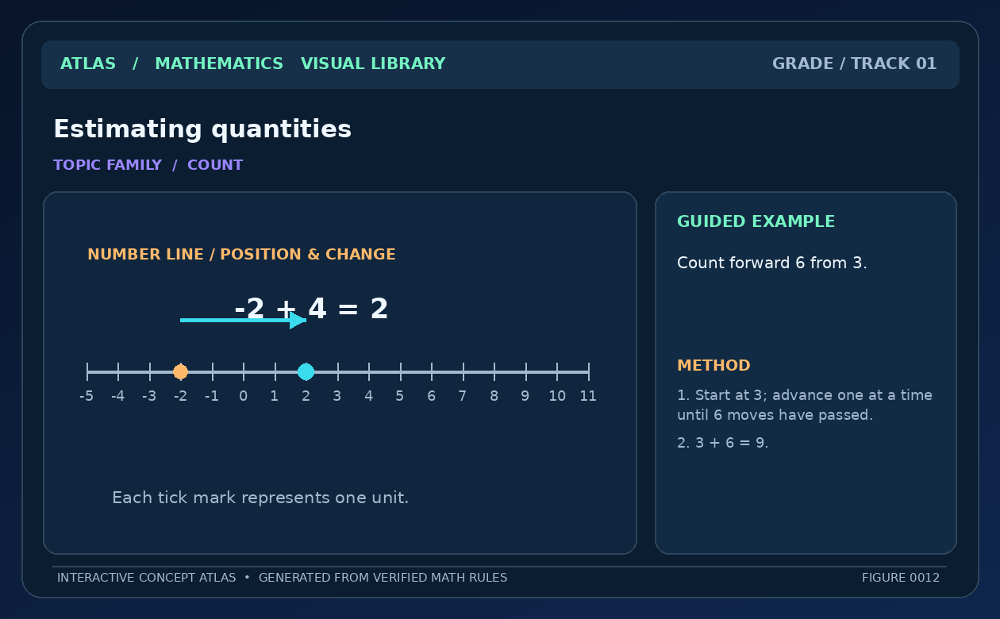
Count forward 6 from 3.
- Start at 3; advance one at a time until 6 moves have passed.
- 3 + 6 = 9.
What number is 5 after 9?
Hint: Count forward the requested number of steps.
Show answer and verify
14
Check the units, inputs and intermediate steps. Different solution methods may be valid.
Comparing equal-sized groups
Comparing equal-sized groups: Use a number line or a grouped collection to associate quantities with numerals. Check successive changes carefully. Counting helps establish order, magnitude, and stable numerical representation.
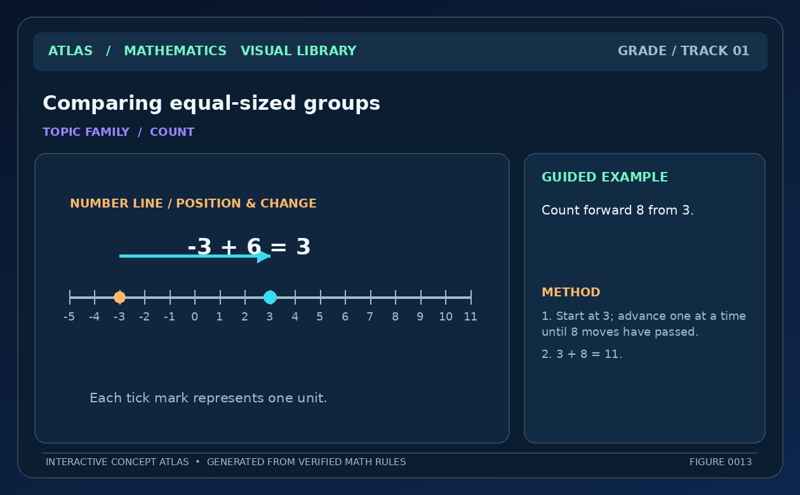
Count forward 8 from 3.
- Start at 3; advance one at a time until 8 moves have passed.
- 3 + 8 = 11.
What number is 5 after 11?
Hint: Count forward the requested number of steps.
Show answer and verify
16
Check the units, inputs and intermediate steps. Different solution methods may be valid.
Number bonds to ten
Number bonds to ten: Use a number line or a grouped collection to associate quantities with numerals. Check successive changes carefully. Counting helps establish order, magnitude, and stable numerical representation.
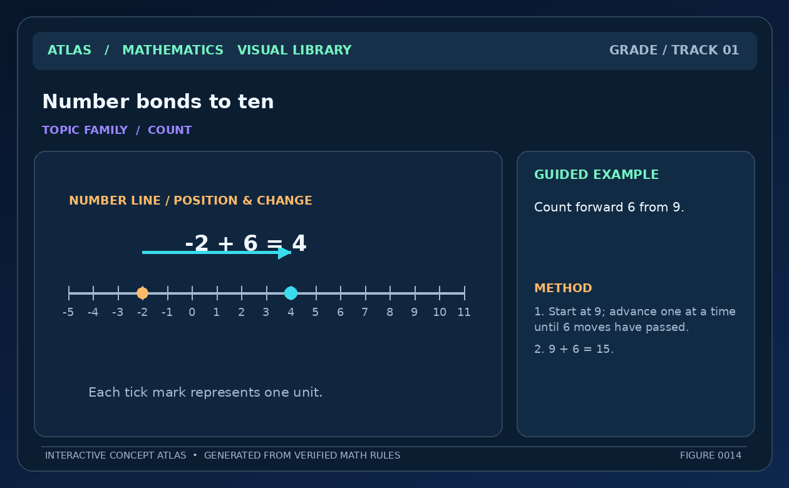
Count forward 6 from 9.
- Start at 9; advance one at a time until 6 moves have passed.
- 9 + 6 = 15.
What number is 6 after 15?
Hint: Count forward the requested number of steps.
Show answer and verify
21
Check the units, inputs and intermediate steps. Different solution methods may be valid.
Addition facts to 10
Addition facts to 10: Combine parts, using place value or number bonds to simplify the sum. Addition preserves a total when terms are rearranged.
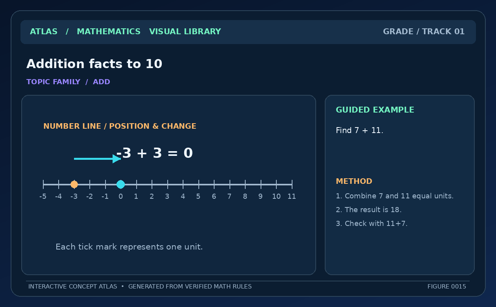
Find 7 + 11.
- Combine 7 and 11 equal units.
- The result is 18.
- Check with 11+7.
14 + 18 = ?
Hint: Make a ten or add the tens and ones separately.
Show answer and verify
32
Check the units, inputs and intermediate steps. Different solution methods may be valid.
Addition facts to 20
Addition facts to 20: Combine parts, using place value or number bonds to simplify the sum. Addition preserves a total when terms are rearranged.
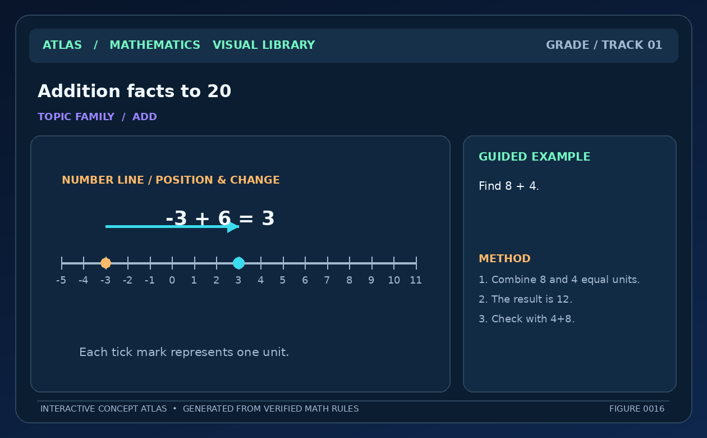
Find 8 + 4.
- Combine 8 and 4 equal units.
- The result is 12.
- Check with 4+8.
12 + 8 = ?
Hint: Make a ten or add the tens and ones separately.
Show answer and verify
20
Check the units, inputs and intermediate steps. Different solution methods may be valid.
Doubles and near doubles
Doubles and near doubles: Combine parts, using place value or number bonds to simplify the sum. Addition preserves a total when terms are rearranged.
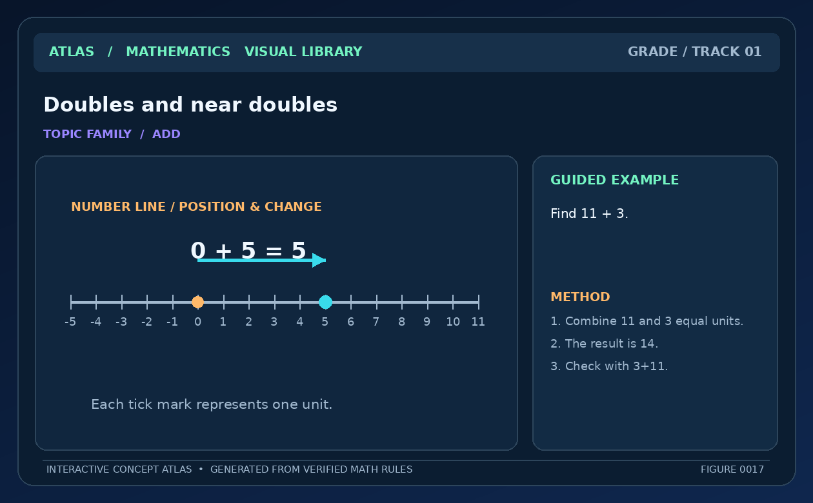
Find 11 + 3.
- Combine 11 and 3 equal units.
- The result is 14.
- Check with 3+11.
15 + 7 = ?
Hint: Make a ten or add the tens and ones separately.
Show answer and verify
22
Check the units, inputs and intermediate steps. Different solution methods may be valid.
Making ten
Making ten: Combine parts, using place value or number bonds to simplify the sum. Addition preserves a total when terms are rearranged.
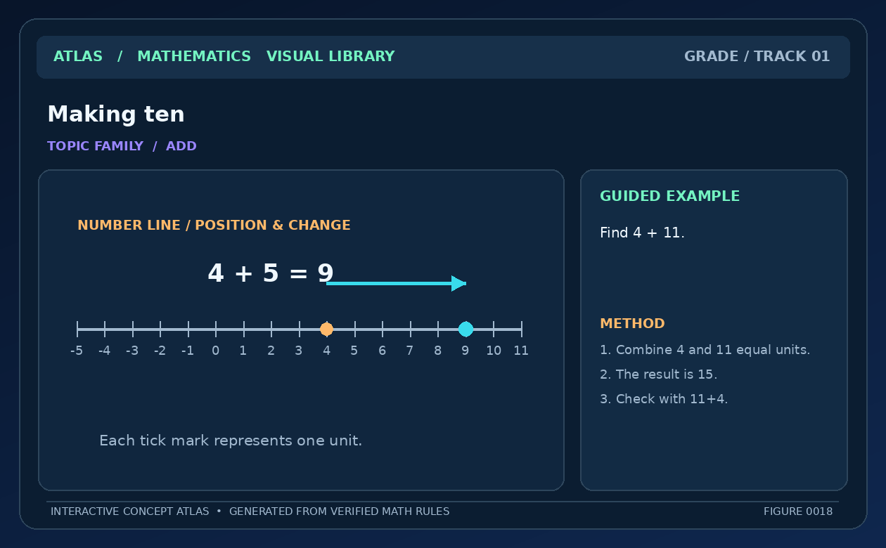
Find 4 + 11.
- Combine 4 and 11 equal units.
- The result is 15.
- Check with 11+4.
10 + 17 = ?
Hint: Make a ten or add the tens and ones separately.
Show answer and verify
27
Check the units, inputs and intermediate steps. Different solution methods may be valid.
Commutative property of addition
Commutative property of addition: Combine parts, using place value or number bonds to simplify the sum. Addition preserves a total when terms are rearranged.
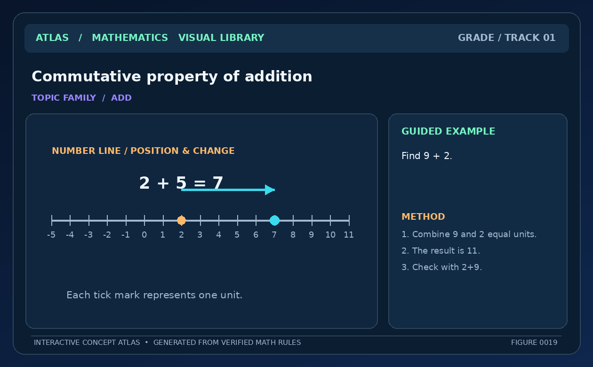
Find 9 + 2.
- Combine 9 and 2 equal units.
- The result is 11.
- Check with 2+9.
10 + 3 = ?
Hint: Make a ten or add the tens and ones separately.
Show answer and verify
13
Check the units, inputs and intermediate steps. Different solution methods may be valid.
Associative property of addition
Associative property of addition: Combine parts, using place value or number bonds to simplify the sum. Addition preserves a total when terms are rearranged.
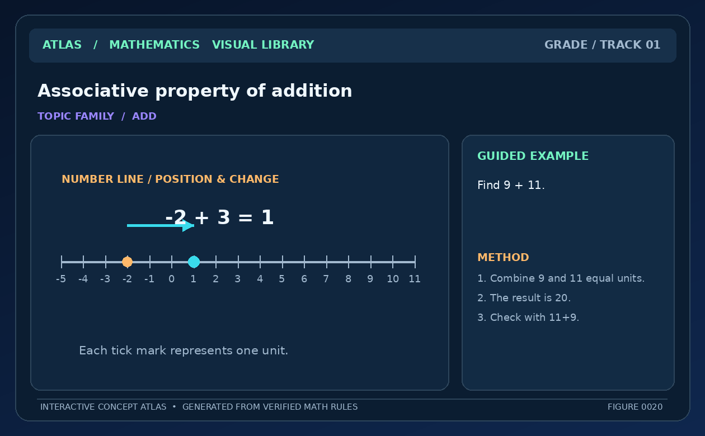
Find 9 + 11.
- Combine 9 and 11 equal units.
- The result is 20.
- Check with 11+9.
14 + 16 = ?
Hint: Make a ten or add the tens and ones separately.
Show answer and verify
30
Check the units, inputs and intermediate steps. Different solution methods may be valid.
Missing addends
Missing addends: Combine parts, using place value or number bonds to simplify the sum. Addition preserves a total when terms are rearranged.
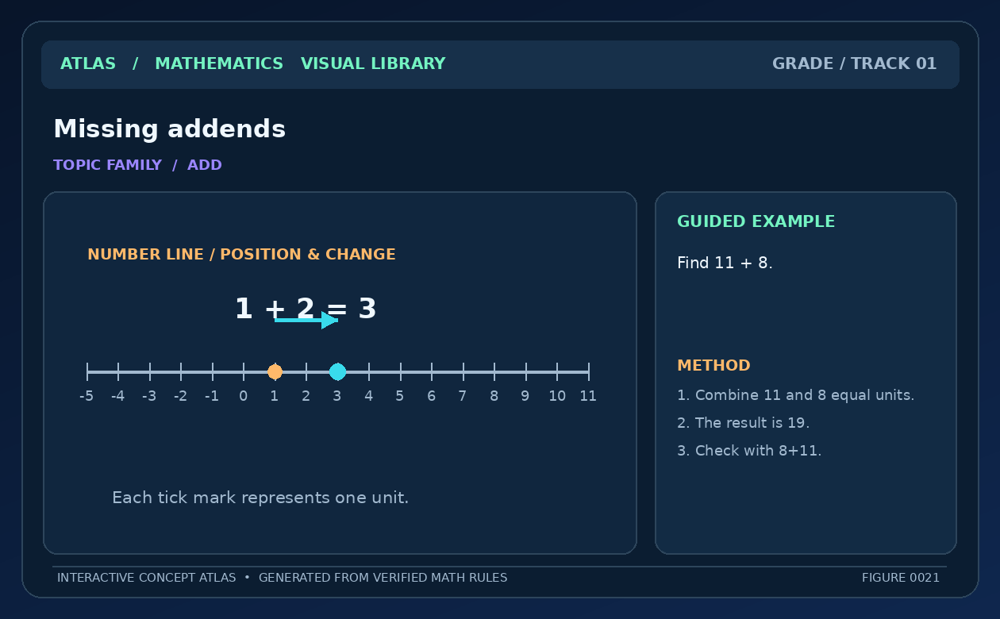
Find 11 + 8.
- Combine 11 and 8 equal units.
- The result is 19.
- Check with 8+11.
12 + 9 = ?
Hint: Make a ten or add the tens and ones separately.
Show answer and verify
21
Check the units, inputs and intermediate steps. Different solution methods may be valid.
Three-number addition
Three-number addition: Combine parts, using place value or number bonds to simplify the sum. Addition preserves a total when terms are rearranged.
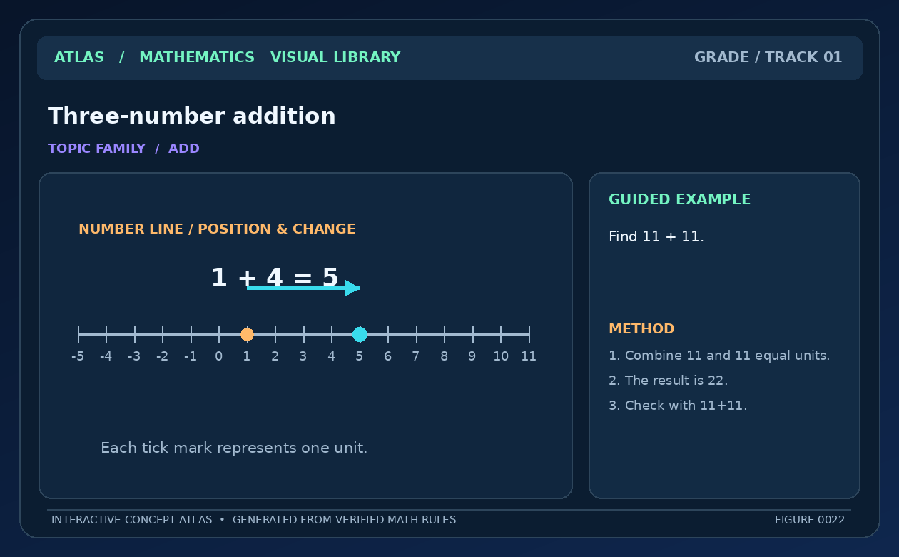
Find 11 + 11.
- Combine 11 and 11 equal units.
- The result is 22.
- Check with 11+11.
14 + 14 = ?
Hint: Make a ten or add the tens and ones separately.
Show answer and verify
28
Check the units, inputs and intermediate steps. Different solution methods may be valid.
Word problems with joining
Word problems with joining: Combine parts, using place value or number bonds to simplify the sum. Addition preserves a total when terms are rearranged.
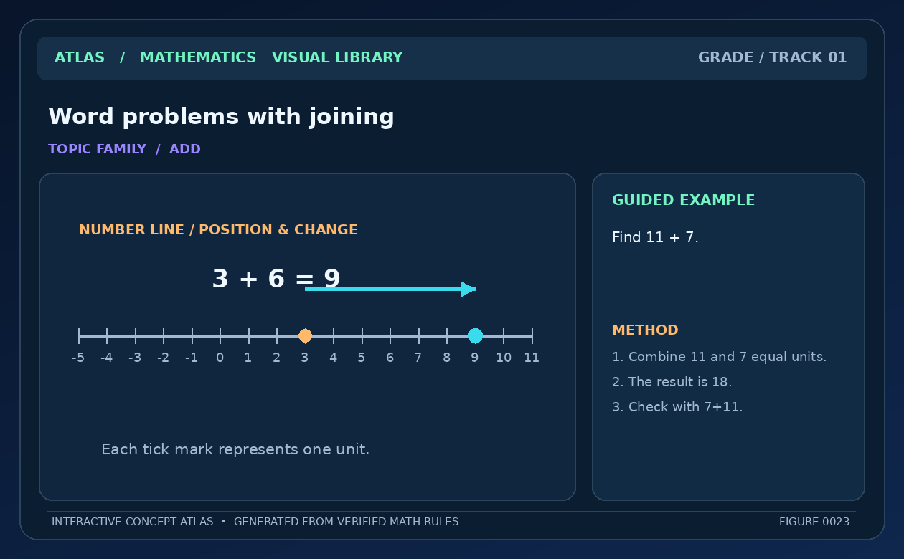
Find 11 + 7.
- Combine 11 and 7 equal units.
- The result is 18.
- Check with 7+11.
17 + 13 = ?
Hint: Make a ten or add the tens and ones separately.
Show answer and verify
30
Check the units, inputs and intermediate steps. Different solution methods may be valid.
Word problems with adding to
Word problems with adding to: Combine parts, using place value or number bonds to simplify the sum. Addition preserves a total when terms are rearranged.
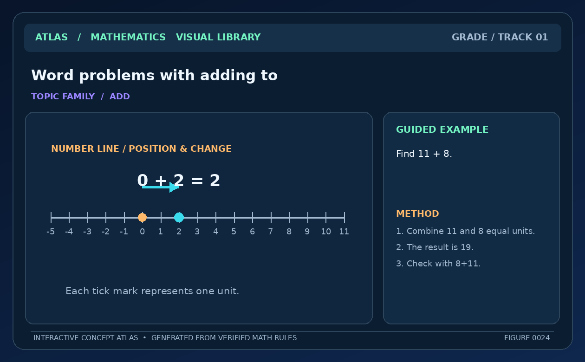
Find 11 + 8.
- Combine 11 and 8 equal units.
- The result is 19.
- Check with 8+11.
14 + 11 = ?
Hint: Make a ten or add the tens and ones separately.
Show answer and verify
25
Check the units, inputs and intermediate steps. Different solution methods may be valid.
Subtraction facts within 20
Subtraction facts within 20: Represent the difference between a starting amount and an amount removed. Subtraction can be checked by adding the difference to the subtracted amount.
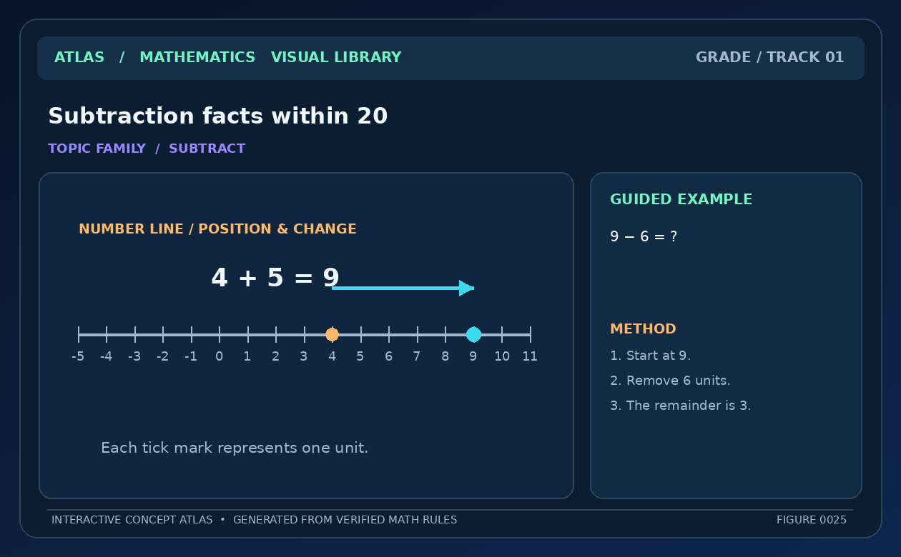
9 − 6 = ?
- Start at 9.
- Remove 6 units.
- The remainder is 3.
13 − 6 = ?
Hint: Subtract from the original amount.
Show answer and verify
7
Check the units, inputs and intermediate steps. Different solution methods may be valid.
Counting back to subtract
Counting back to subtract: Represent the difference between a starting amount and an amount removed. Subtraction can be checked by adding the difference to the subtracted amount.
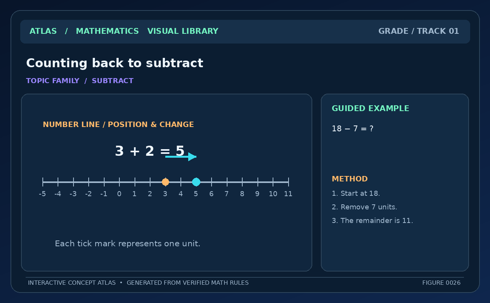
18 − 7 = ?
- Start at 18.
- Remove 7 units.
- The remainder is 11.
24 − 7 = ?
Hint: Subtract from the original amount.
Show answer and verify
17
Check the units, inputs and intermediate steps. Different solution methods may be valid.
Related addition and subtraction facts
Related addition and subtraction facts: Represent the difference between a starting amount and an amount removed. Subtraction can be checked by adding the difference to the subtracted amount.
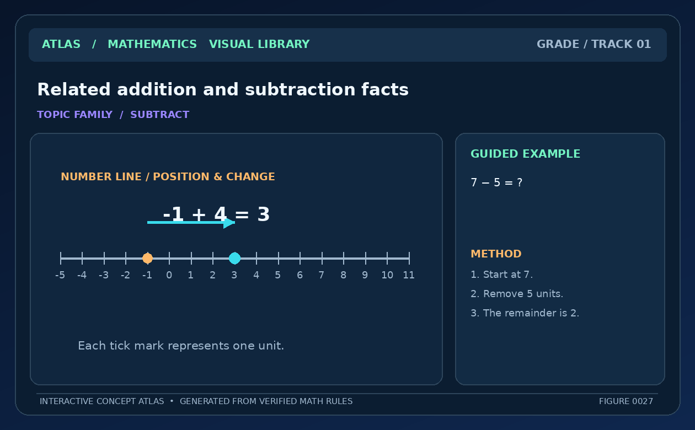
7 − 5 = ?
- Start at 7.
- Remove 5 units.
- The remainder is 2.
8 − 5 = ?
Hint: Subtract from the original amount.
Show answer and verify
3
Check the units, inputs and intermediate steps. Different solution methods may be valid.
Missing subtrahends
Missing subtrahends: Represent the difference between a starting amount and an amount removed. Subtraction can be checked by adding the difference to the subtracted amount.
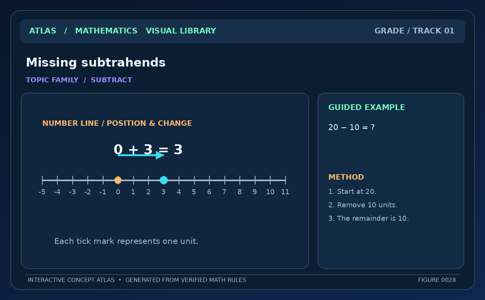
20 − 10 = ?
- Start at 20.
- Remove 10 units.
- The remainder is 10.
23 − 10 = ?
Hint: Subtract from the original amount.
Show answer and verify
13
Check the units, inputs and intermediate steps. Different solution methods may be valid.
Finding differences
Finding differences: Represent the difference between a starting amount and an amount removed. Subtraction can be checked by adding the difference to the subtracted amount.
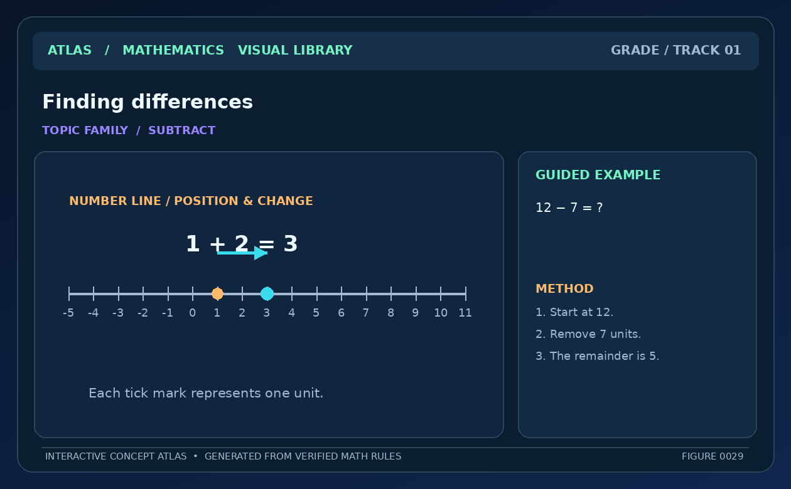
12 − 7 = ?
- Start at 12.
- Remove 7 units.
- The remainder is 5.
14 − 7 = ?
Hint: Subtract from the original amount.
Show answer and verify
7
Check the units, inputs and intermediate steps. Different solution methods may be valid.
Story problems with separating
Story problems with separating: Represent the difference between a starting amount and an amount removed. Subtraction can be checked by adding the difference to the subtracted amount.
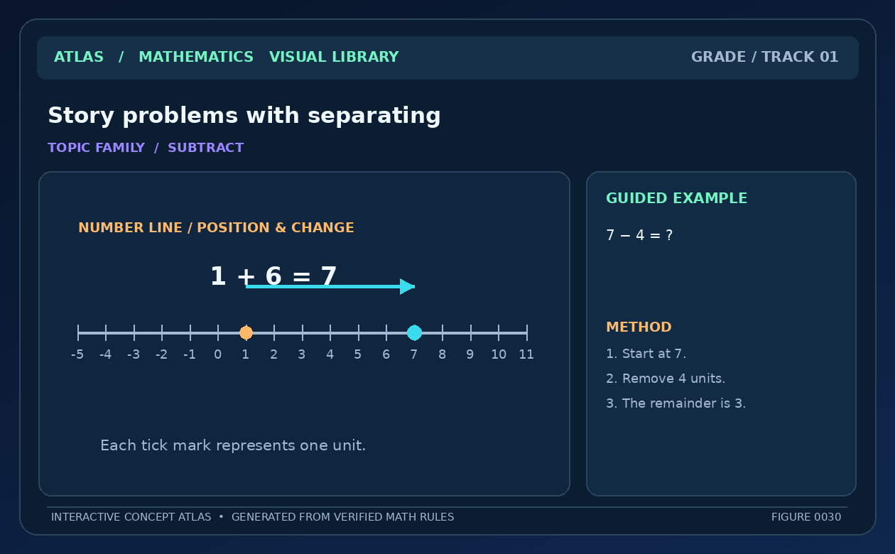
7 − 4 = ?
- Start at 7.
- Remove 4 units.
- The remainder is 3.
8 − 4 = ?
Hint: Subtract from the original amount.
Show answer and verify
4
Check the units, inputs and intermediate steps. Different solution methods may be valid.
Word problems with comparing
Word problems with comparing: Represent the difference between a starting amount and an amount removed. Subtraction can be checked by adding the difference to the subtracted amount.
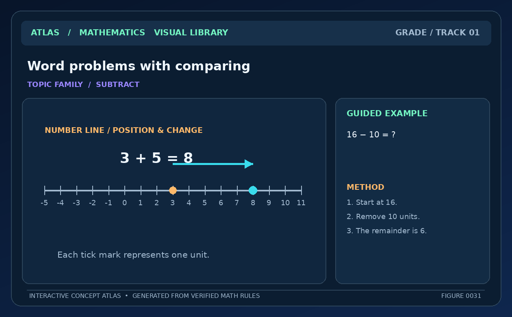
16 − 10 = ?
- Start at 16.
- Remove 10 units.
- The remainder is 6.
17 − 10 = ?
Hint: Subtract from the original amount.
Show answer and verify
7
Check the units, inputs and intermediate steps. Different solution methods may be valid.
Naming circles and rectangles
Naming circles and rectangles: Sketch and label known lengths, angles and shape properties before calculating. A valid geometric argument uses definitions and established properties.
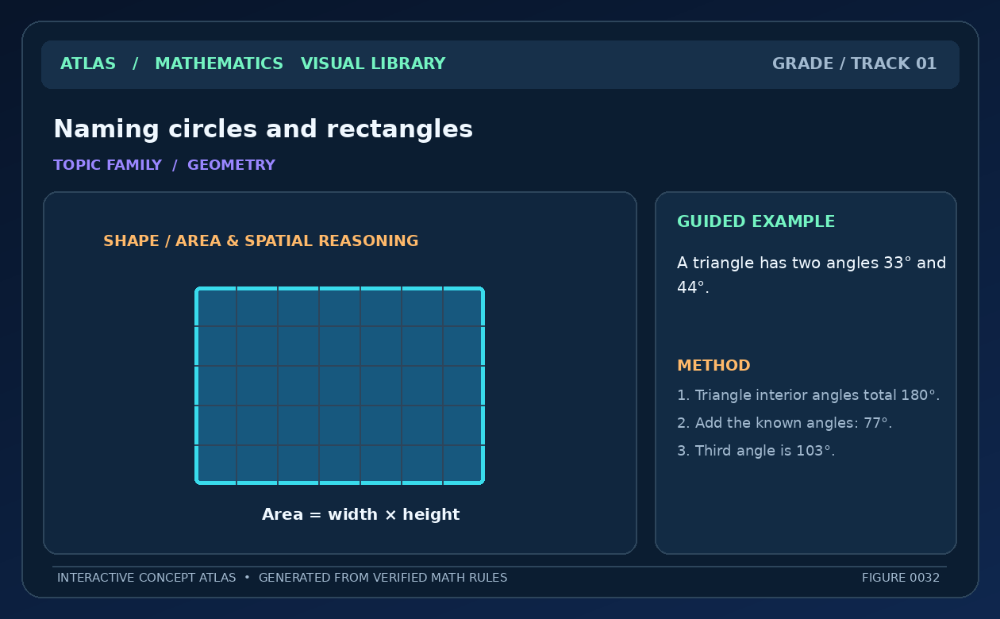
A triangle has two angles 33° and 44°.
- Triangle interior angles total 180°.
- Add the known angles: 77°.
- Third angle is 103°.
A triangle has angles 22° and 33°. Find the third.
Hint: Interior triangle angles sum to 180 degrees.
Show answer and verify
125
Check the units, inputs and intermediate steps. Different solution methods may be valid.
Sorting two-dimensional shapes
Sorting two-dimensional shapes: Sketch and label known lengths, angles and shape properties before calculating. A valid geometric argument uses definitions and established properties.
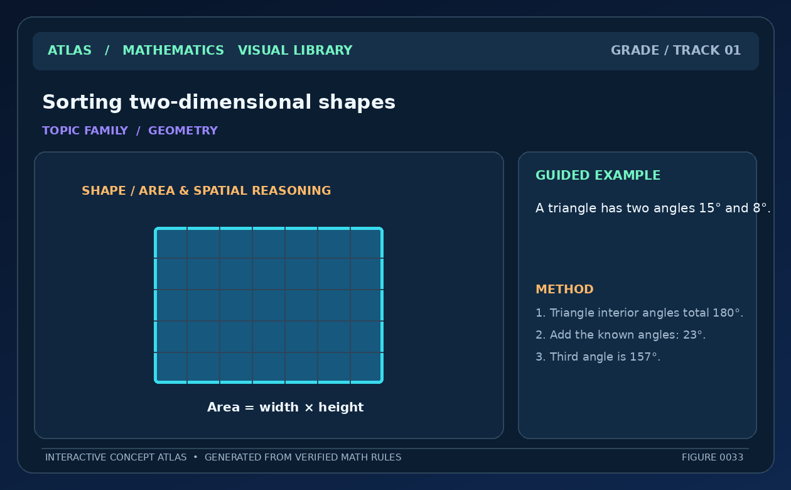
A triangle has two angles 15° and 8°.
- Triangle interior angles total 180°.
- Add the known angles: 23°.
- Third angle is 157°.
A triangle has angles 10° and 6°. Find the third.
Hint: Interior triangle angles sum to 180 degrees.
Show answer and verify
164
Check the units, inputs and intermediate steps. Different solution methods may be valid.
Three-dimensional shape vocabulary
Three-dimensional shape vocabulary: Sketch and label known lengths, angles and shape properties before calculating. A valid geometric argument uses definitions and established properties.
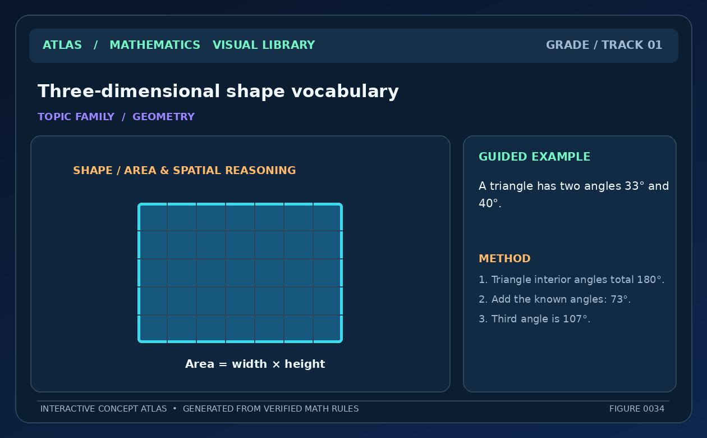
A triangle has two angles 33° and 40°.
- Triangle interior angles total 180°.
- Add the known angles: 73°.
- Third angle is 107°.
A triangle has angles 22° and 30°. Find the third.
Hint: Interior triangle angles sum to 180 degrees.
Show answer and verify
128
Check the units, inputs and intermediate steps. Different solution methods may be valid.
Partitioning circles and rectangles
Partitioning circles and rectangles: Sketch and label known lengths, angles and shape properties before calculating. A valid geometric argument uses definitions and established properties.
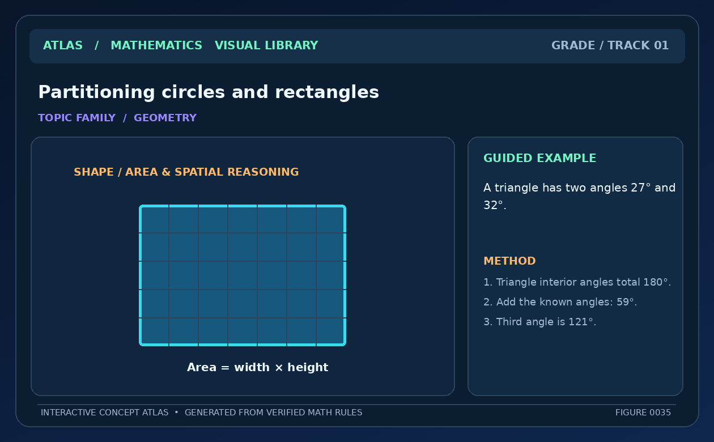
A triangle has two angles 27° and 32°.
- Triangle interior angles total 180°.
- Add the known angles: 59°.
- Third angle is 121°.
A triangle has angles 18° and 24°. Find the third.
Hint: Interior triangle angles sum to 180 degrees.
Show answer and verify
138
Check the units, inputs and intermediate steps. Different solution methods may be valid.
Symmetry introduction
Symmetry introduction: Sketch and label known lengths, angles and shape properties before calculating. A valid geometric argument uses definitions and established properties.
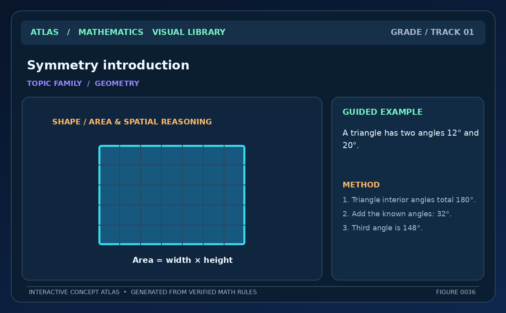
A triangle has two angles 12° and 20°.
- Triangle interior angles total 180°.
- Add the known angles: 32°.
- Third angle is 148°.
A triangle has angles 8° and 15°. Find the third.
Hint: Interior triangle angles sum to 180 degrees.
Show answer and verify
157
Check the units, inputs and intermediate steps. Different solution methods may be valid.
Tens and ones using blocks
Tens and ones using blocks: Group digits according to powers of ten; moving one place left multiplies value by 10. An expanded number is the sum of its place-value contributions.
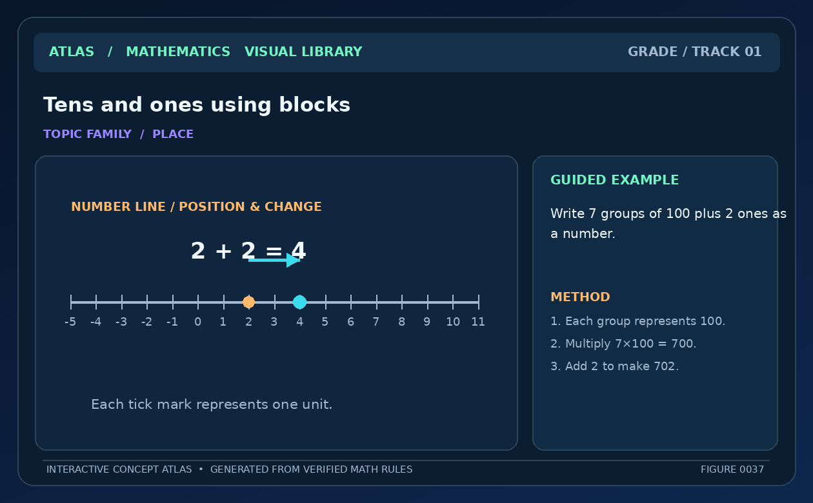
Write 7 groups of 100 plus 2 ones as a number.
- Each group represents 100.
- Multiply 7×100 = 700.
- Add 2 to make 702.
Calculate 4×100 + 7.
Hint: Expand the place value before adding.
Show answer and verify
407
Check the units, inputs and intermediate steps. Different solution methods may be valid.
Tens and ones in expanded notation
Tens and ones in expanded notation: Group digits according to powers of ten; moving one place left multiplies value by 10. An expanded number is the sum of its place-value contributions.
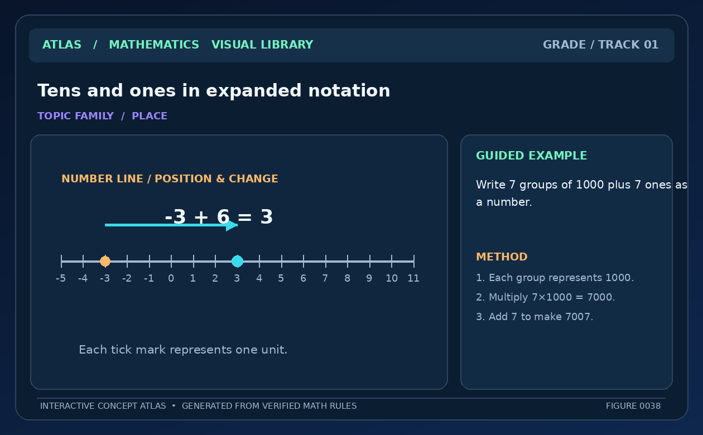
Write 7 groups of 1000 plus 7 ones as a number.
- Each group represents 1000.
- Multiply 7×1000 = 7000.
- Add 7 to make 7007.
Calculate 2×1000 + 7.
Hint: Expand the place value before adding.
Show answer and verify
2007
Check the units, inputs and intermediate steps. Different solution methods may be valid.
Place value to 120
Place value to 120: Group digits according to powers of ten; moving one place left multiplies value by 10. An expanded number is the sum of its place-value contributions.
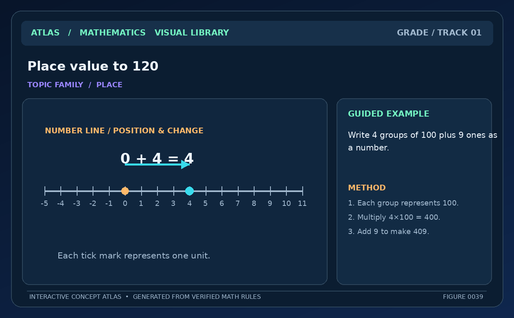
Write 4 groups of 100 plus 9 ones as a number.
- Each group represents 100.
- Multiply 4×100 = 400.
- Add 9 to make 409.
Calculate 7×100 + 4.
Hint: Expand the place value before adding.
Show answer and verify
704
Check the units, inputs and intermediate steps. Different solution methods may be valid.